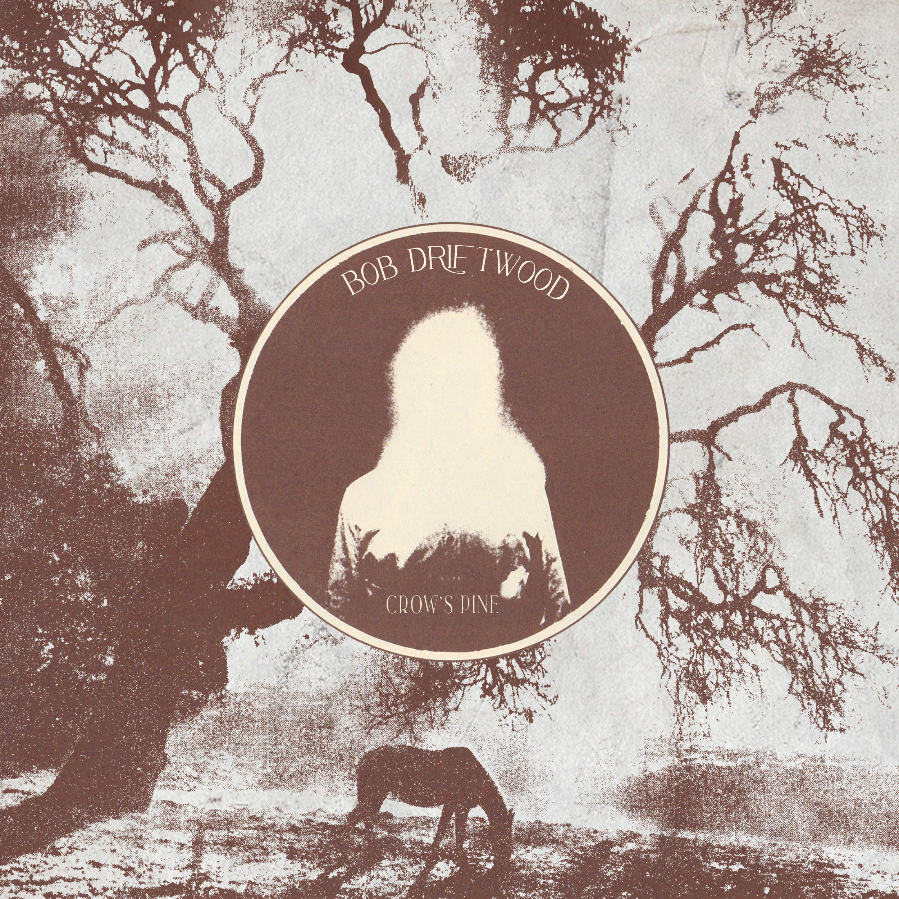
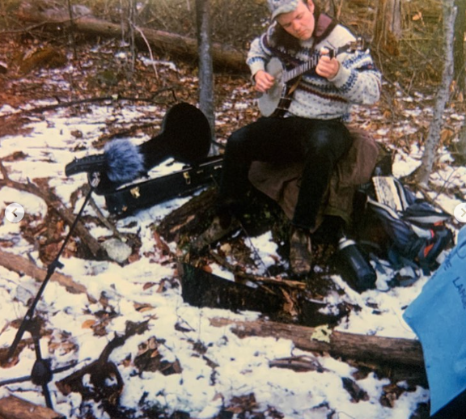

LA017: Bob Driftwood - "Crow's Pine"
Release: 8/26/22

Songs of labor, songs of rest, of redemption and the human soul. Throughout time, people have taken to shaping air in song in order to color in the enormity of life. We know music as a pure language because it is too rich an experience for the ruling class to ever afford us. Regionalized efforts only further speak to the diffusion of the people's sounds. The craggled forests of the northeast US is where we find Bob Driftwood stewing his own blend of bristling banjo plucks, croaked laments, dilapidated saxophone yelps, and rallying naturalist ethic. His debut album, Crow's Pine, is an onward stampede of late capitalist agitation and balladeering threnodies for humanity's suffering, yet still carrying the water torch towards brighter days ahead "Rat Race" and "Bunker's Blues" burble with jittery energy buoyed by the saxophone playing of Carolyn Hietter (Sweet Baby Jesus, Financial Collapse) while the pastoral cloaked "Ivory Tower" and "Spring Lullaby" embody the tender amplitude of Coco Goupil's voice (Amiture). The elastic pacing of the album's opener, "Automatic Masochist", thanks to the guitar playing of Coco G., embodies the push/pull sentiment that courses through the album. Sitting both above and below it all is the textured finesse of Henry Birdsey's (Tongue Depressor, Old Saw) pedal steel, lap steel, and cello playing. Bob assembles a constellation of forces; textured and at times bitingly raw, to carve a cutout of the transcendence and indignity of it all. We may be reminded of the harshness, but we accept this frame gladly because it's the realist thing we know.

RIYL: Daniel Higgs, Karen Dalton, Don Cherry, Captain Beefheart
Format: CS / DIG
Bio